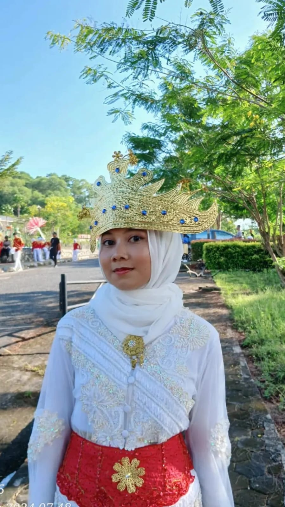

Hello Saya Tiwi
Dosen Universitas Indonesia
Saya adalah Dosen Muda lulusan Universitas Nasional Singapura dengan IPK 3.9.
Saya juga merupakan seorang penulis buku, sudah lebih dari 20 buku yang telah
saya tulis hingga saat ini. Selama di dunia perkuliahan saya adalah siswa yang
aktif mengikuti olimpiade dan saya juga berkesempatan untuk mengikuti pertukaran
mahasiswa ke Korea Selatan. Saya mempunyai hoby menyanyi dan menari selain itu saya juga
seorang K-POPers. Saya menguasai berbagai bahasa asing seperti Bahasa Inggris, Bahasa China,
Bahasa Jepang, dan Bahasa Belanda